UI-testing für mobile Plattformen
Herausforderung und Chance zugleich!
von Markus Tiede
About me
Agenda
- Das Projekt
der Kunde, die App und die Technik - Das Tool
die Ziele, die Konzepte und die Technik - Die Erfahrung
das Feedback und der Ausblick
1. Das Projekt - BREDEX GmbH
- Entwicklung von Enterprise Anwendungen
Plattformunabhängig
25+ Jahre - Mobile Entwicklung: Geschäftsanwendungen
Plattformunabhängig
individuelle Technologieauswahl- nativ
- crossplattform
- webbasiert
- Qualitätssicherung & Testautomatisierung
1. Das Projekt - die User Story
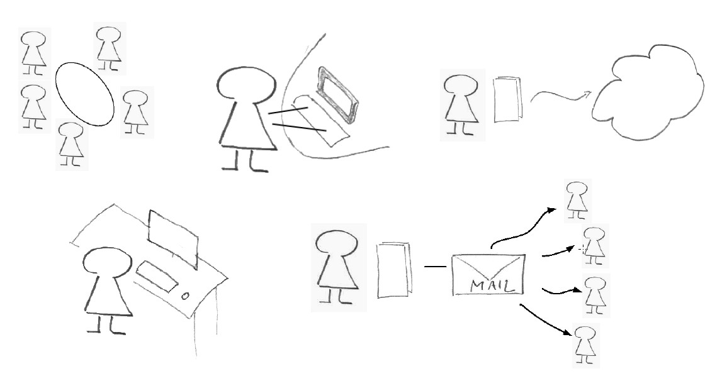DEMO!
Die App
1. Das Projekt - die App
- Erstellung und Verteilung von Meeting-Protokollen
- Protokoll mobil erfassen
- Tablet (iOS Android, Windows 8), Laptop
→ Crossplattform IDE: Xamarin Mono - Offline Support bei Erstellung von Protokollen
- Tablet (iOS Android, Windows 8), Laptop
- Überarbeitung am Arbeitsplatz(optional)
- Verteilung als PDF per Mail
- Funktionen zur Protokollverwaltung
- Automatisierte funktionale Regressionstests
GUIdancer / Jubula
2. Das Tool - die Ziele
mobile UI Toolkits für GUIdancer / Jubula
frei verfügbar und open-source: testing.bredex.de
"Code-free keyword-based black-box testing" - mobile!
high-level Testschritte + robuste UI Widgeterkennung
Analog zur Desktop Welt: cross-...
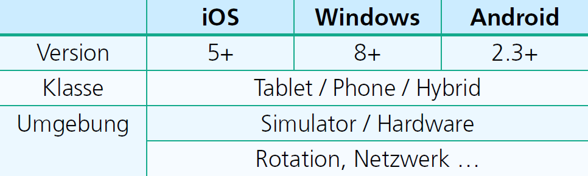2. Das Tool - das Konzept: Abstraktion
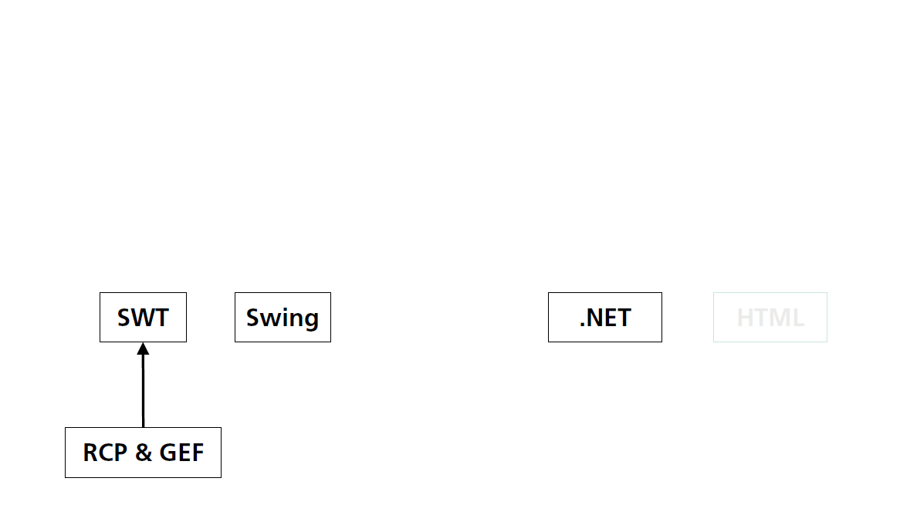2. Das Tool - das Konzept: Abstraktion
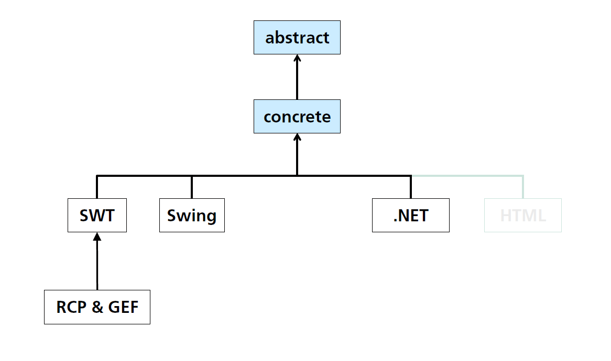2. Das Tool - das Konzept: Abstraktion
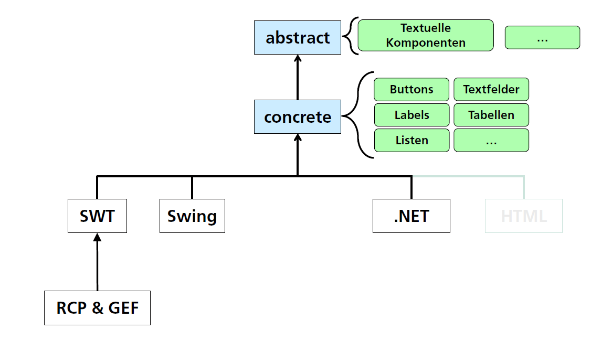2. Das Tool - das Konzept: Abstraktion
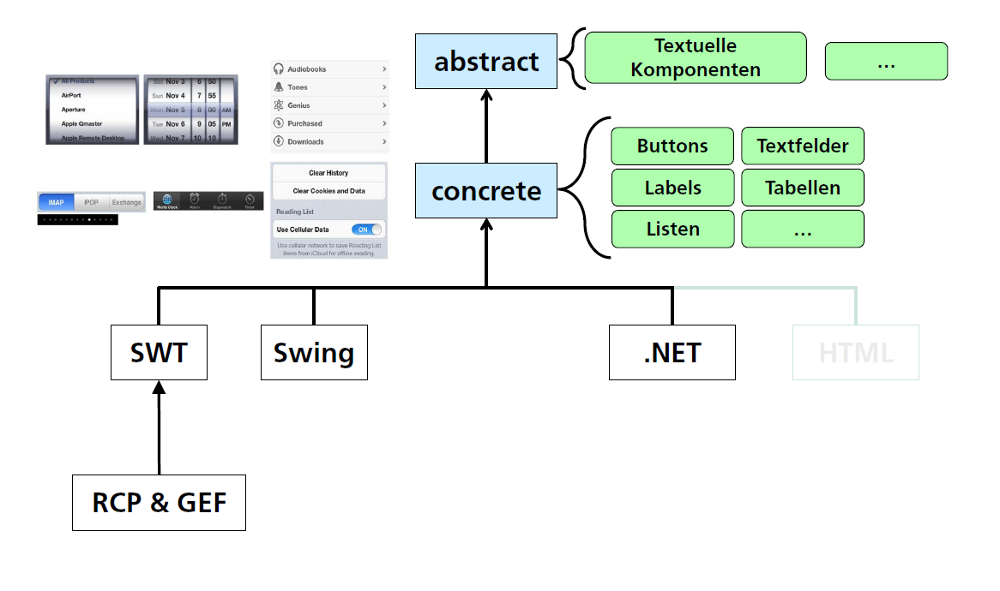2. Das Tool - das Konzept: Abstraktion
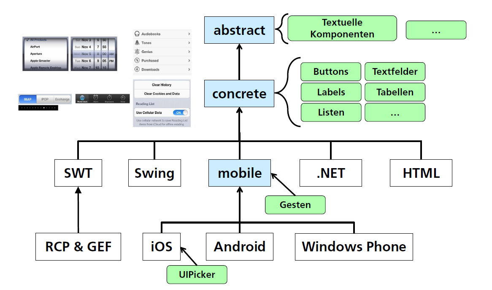2. Das Tool - das Konzept: Abstraktion
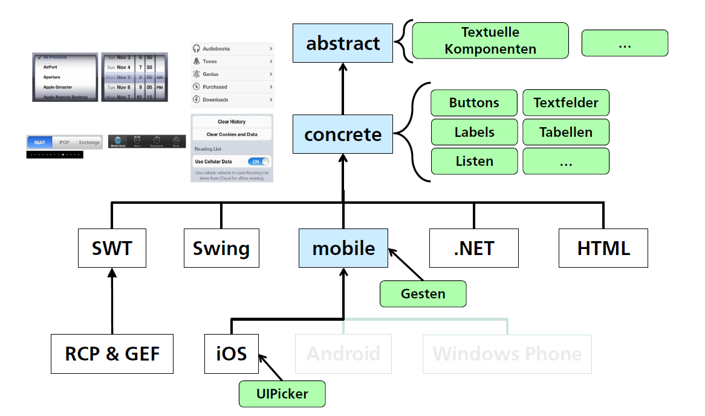2. Das Tool - das Konzept: Abstraktion
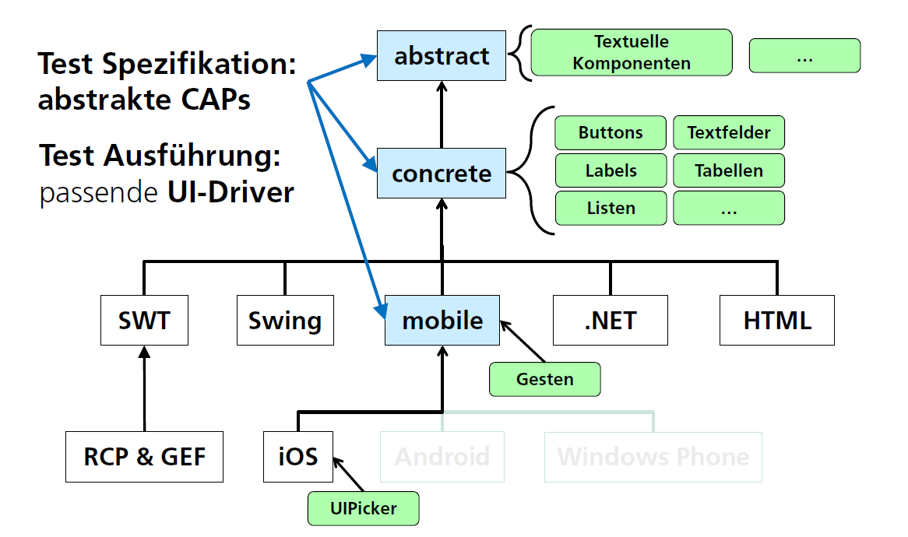2. Das Tool - das Konzept: Abstraktion
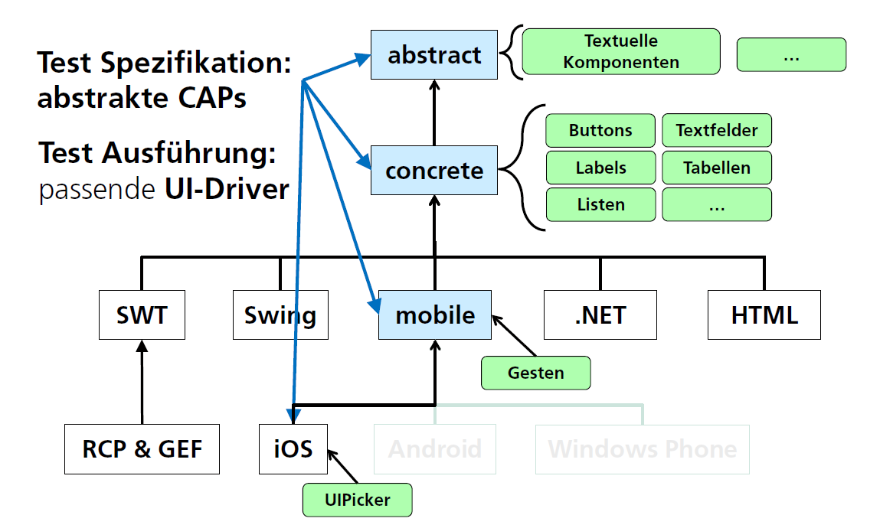2. Das Tool - das Konzept: Entkopplung
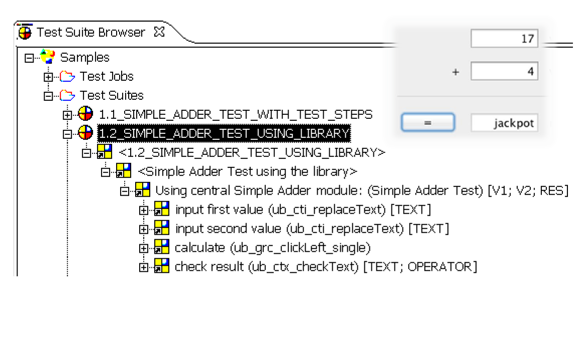2. Das Tool - das Konzept: Entkopplung
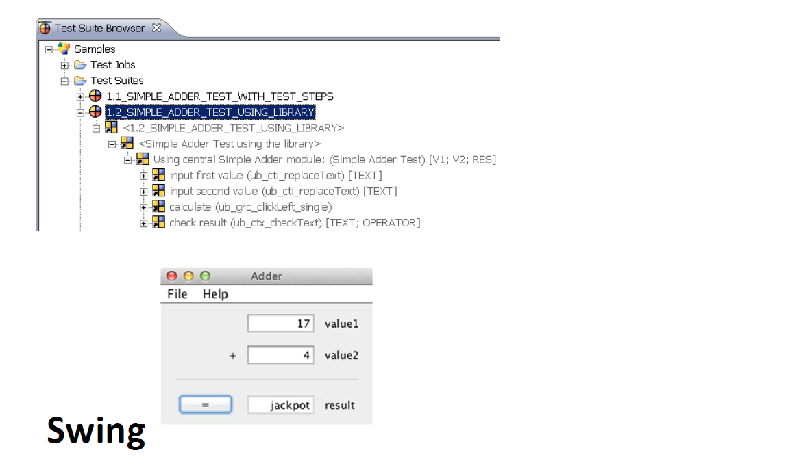2. Das Tool - das Konzept: Entkopplung
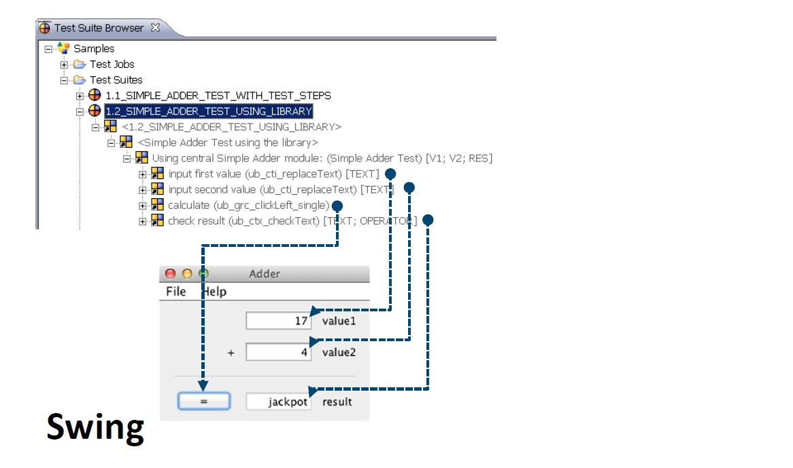2. Das Tool - das Konzept: Entkopplung
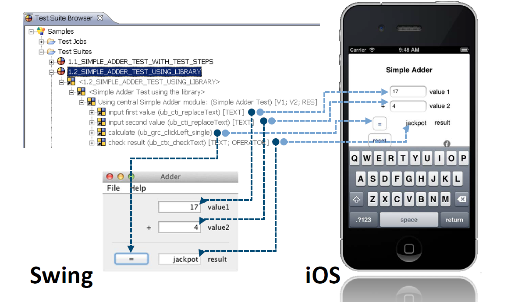DEMO!
Testspezifikation und Mapping
2. Das Tool - die Technik: iOS
- Driver Robot API: KIF
Keep it functional - iOS Sandbox Prinzip
AUT Quellcode-Modifikation notwendig
Einschränkungen bzgl. AUT start / re-start - Supported
iOS 5+
Simulator + Devices: iPad (mini), iPhone, iPod, ...
non-continuous gestures
Cross-Plattform mobile Frameworks / IDEs: Xamarin Mono
DEMO!
Testlauf der Protokoll-App
2. Das Tool - die Technik: Windows 8
Driver Robot API: Microsoft UI Automation Framework
keine cross-UI Toolkit Abstraktion von Microsoft

Supported: .NET ab 3.5+
UI Toolkit Winforms;
WPF & Modern UI in Planung
OS: alle außer Windows
RT
3. Die Erfahrungen
Erfahrungen aus Protokoll-App und weiterem iOS Kundenprojekt
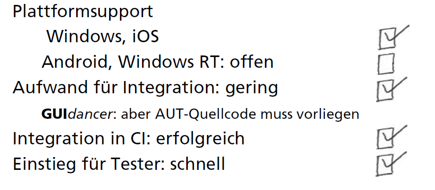3. Die Erfahrungen - die Stolpersteine
Hürden: Keyboardlayouts
Kontextabhängig,
Plattformabhängig
Device-abhängig, Sprachabhängig
Offen:
Zeichen erreichbar via "Long Tap"
Herausforderungen: Navigationskonzepte
Android
/ iOS: tabbed user interface
Windows 8 Modern UI: hub
design
Grenzen: Umgebungsparameter nachbilden
Orientierungswechsel
Connectivity
3. Die Erfahrungen - der Ausblick
Unterstützung für weitere Toolkits / Plattformen
Android
und Windows Modern UI
Kombination von plattformübergreifenden
und
-spezifischen Testschritten
if-then-else
Abstraktion für unterschiedliche Navigationskonzepte